Vegetarian
Non-Vegetarian
Pastas and Soups
Kitchen Essentials
Claire's Cuisine
Sitemap
Contact
Vegetarian Recipes
Filter Recipes:
Asian
American
European
Hispanic
Indian
Mediterranean
North African
Low Carb
Low Calorie
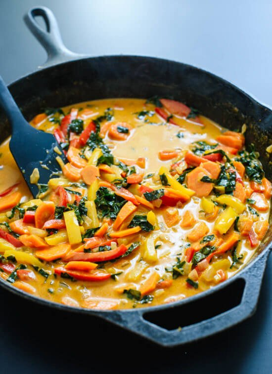
Thai Red Curry
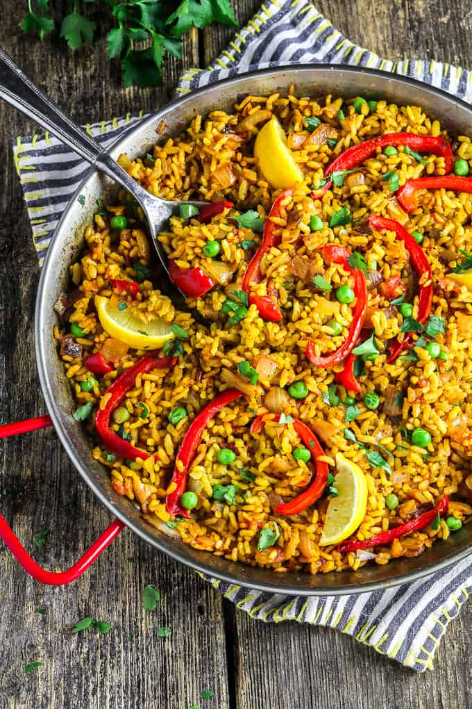
Vegetarian Paella
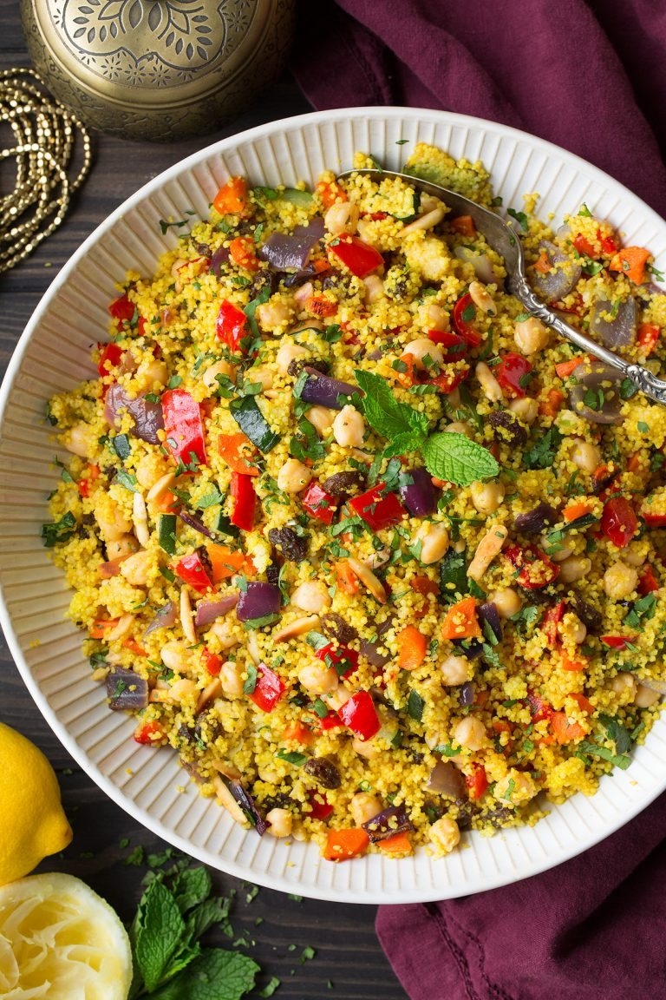
Moroccan Couscous and Beans
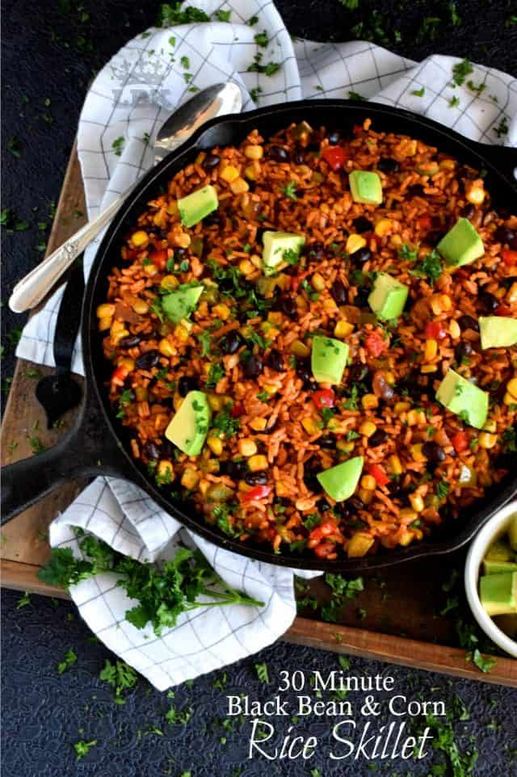
Black Bean Corn Rice Skillet
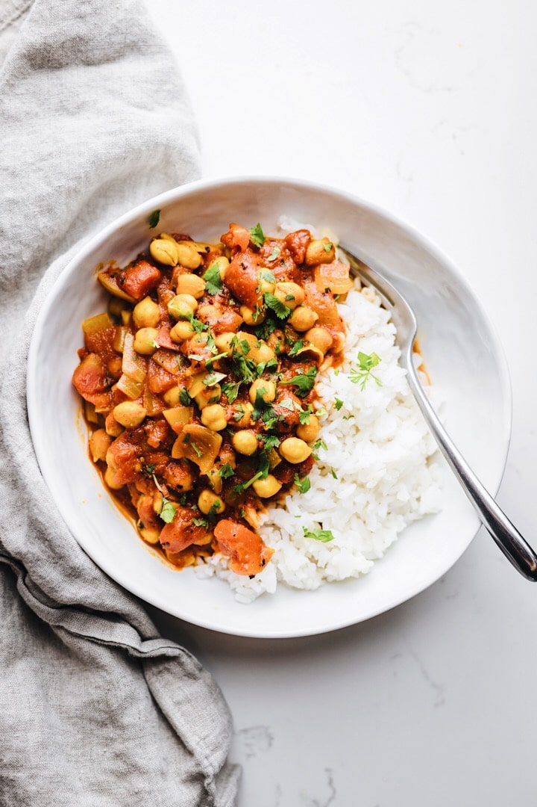
Healthy Moroccan Bean Stew
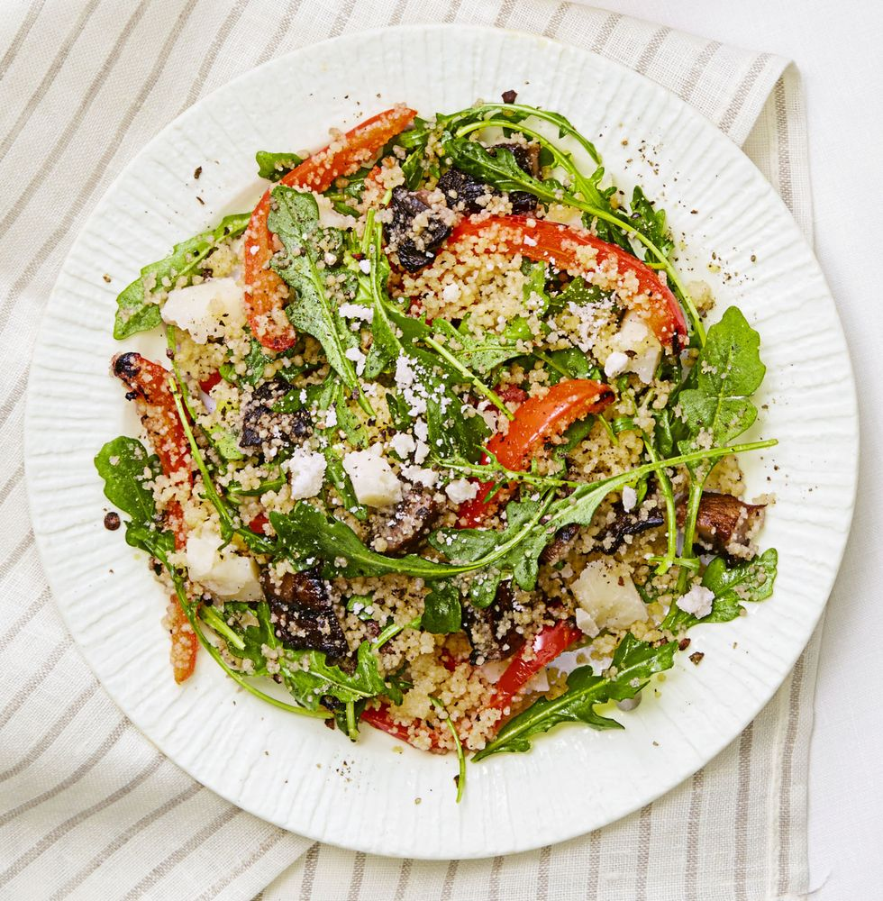
Veggie Couscous Salad
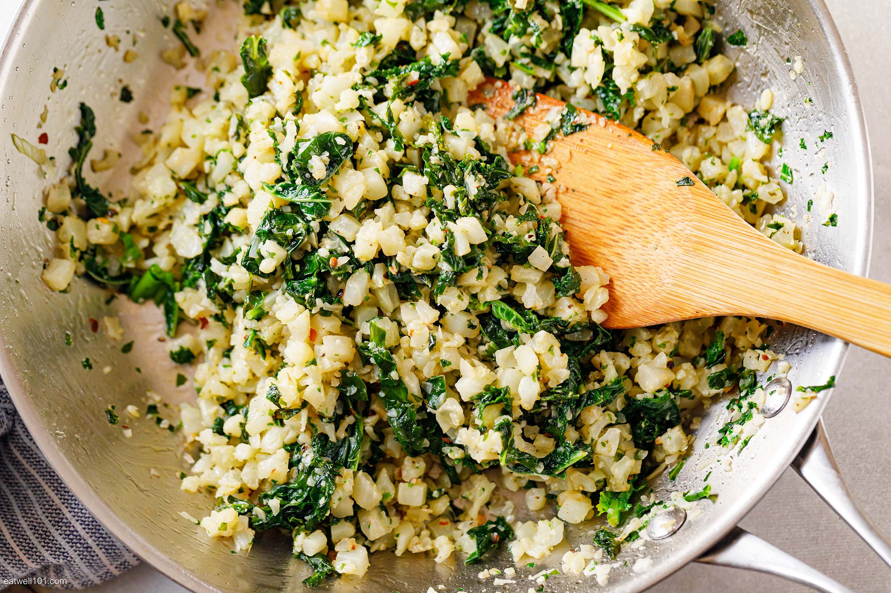
Garlic Butter Cauli Rice
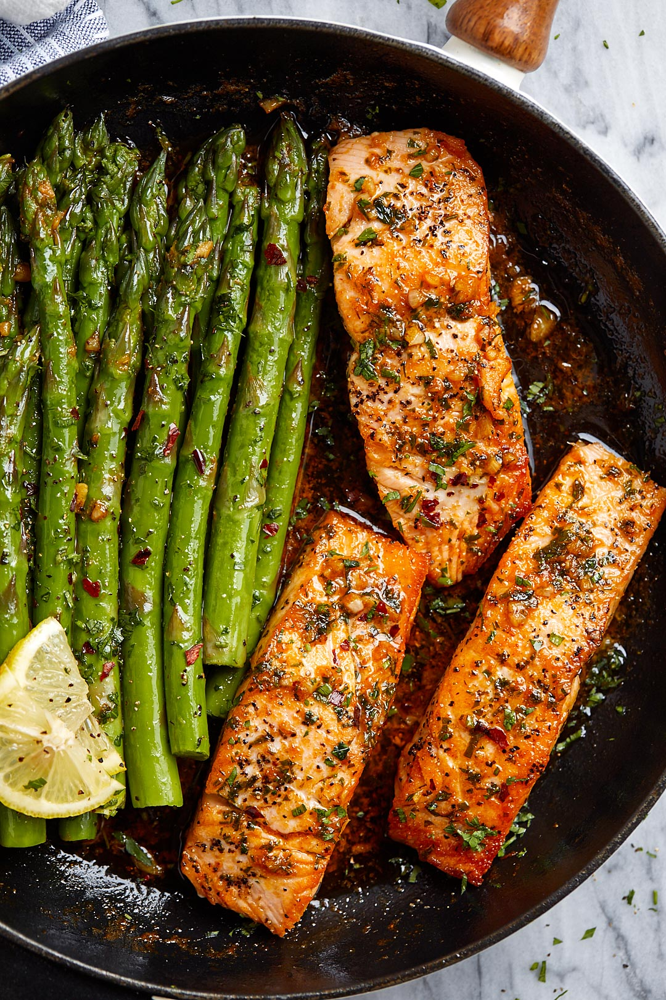
Garlic Butter Salmon and Asparagus
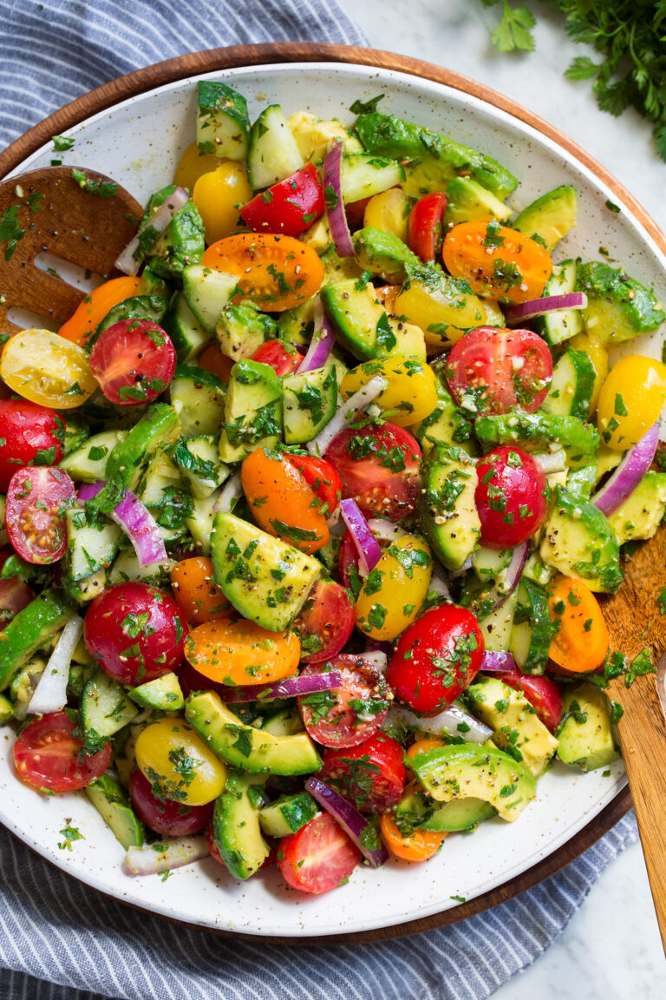
Avocado Salad
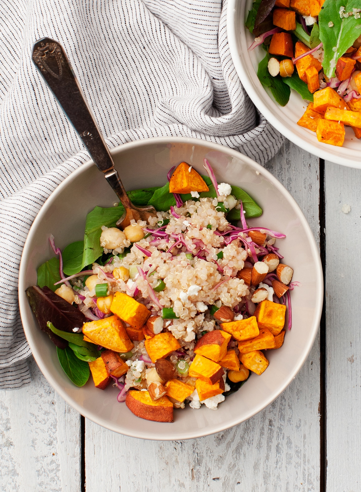
Sweet Potato Quinoa Bowl
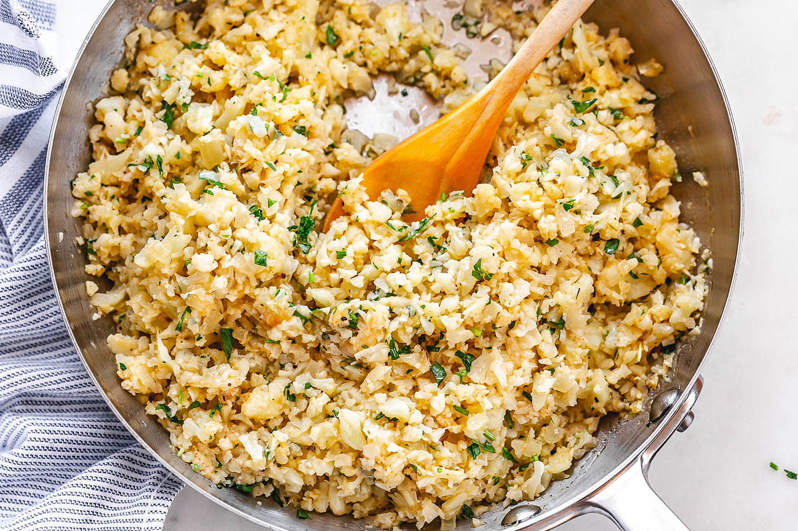
Parmesan Cauli Rice Skillet
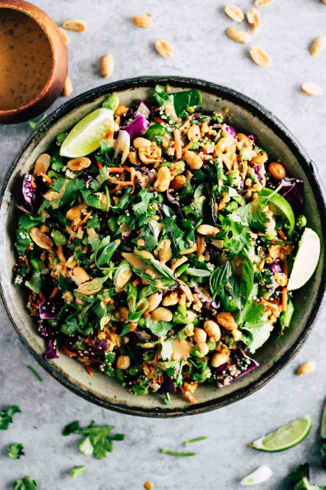
Edamame Peanut Salad
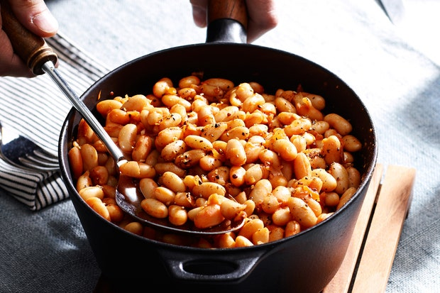
Beans with Sweet Paprika and Garlic
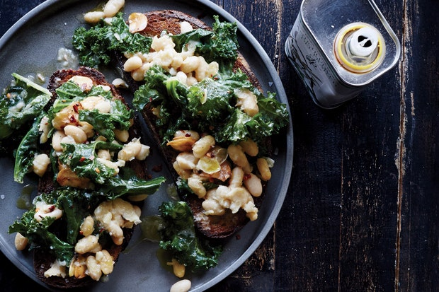
Skillet Bruschetta with Beans and Greens
Spanish Moroccan Fish
Tuscan Butter Shrimp
Herb Crusted Halibut
Garbanzo Bean Stir-Fry
.webp "spanish moroccan fish")
.jpg "tuscan butter shrimp")
.webp "herb crusted halibut")
.webp "garbanzo bean stir fry")